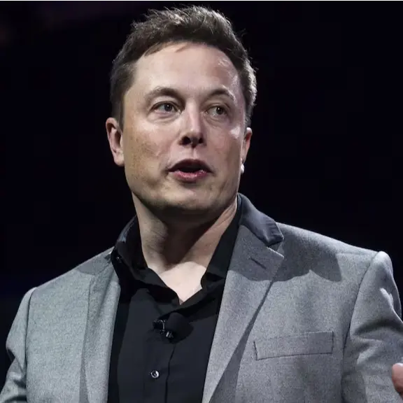

Elon Musk is a technology entrepreneur known for his work in electric vehicles, space exploration, and artificial intelligence. He leads companies such as Tesla and SpaceX and has become one of the most influential figures in modern technology.
Major Achievements
- Founded SpaceX in 2002
- CEO of Tesla
- Developed reusable rocket technology
- Popularized electric vehicles worldwide
- Owner of X (formerly Twitter)
Timeline
- 1971 – Born in South Africa
- 1995 – Co-founded Zip2
- 2002 – Founded SpaceX
- 2004 – Joined Tesla
- 2022 – Acquired Twitter
- 2026 – Became the world's first trillionaire
Famous Quote
"When something is important enough, you do it even if the odds are not in your favor."